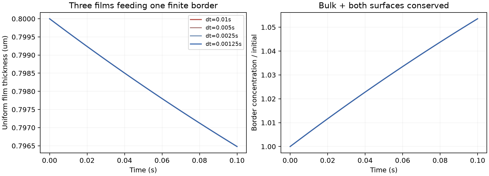

FROTH results三张均匀膜与有限边界：液量、总表活同时交换
完成四档时间步、共150个推进步和300次局部BVP求解。到0.1秒，膜液量减少约0.445%，边界浓度增加约5.35%；液量与总表活均成对转移，没有全局归一化或负值裁剪。

当前是三张空间均匀膜与一个完全混合边界的局部准稳态模型。使用瞬时Henry平衡和线性化表面张力；尚未证明吸附时间条件，没有空间膜流动、沿边界流动、惯性、气体交换或破裂，也未验证全系统能量收支。不是完整运动泡沫或实验验证。
两界面的表活通量不可遗漏：J=c_f q(1+2η/h)，而不是只用c_f q。边界同时存储体相及弧面表活，边界半径变化也更新膜的实际面积。
参数、收敛及限制 · 独立读取CSV的收支审计 · 矢量PDF